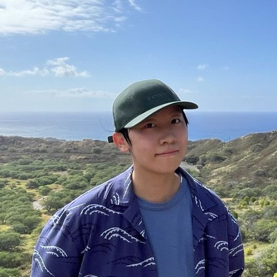

言語モデルは、ソフトウェア開発から科学研究まで、さまざまなタスクで使われるようになっている。こうしたタスクでは、根拠が結論をどう支えるかを説明し、どの情報が重要かを判断し、それまでの知見を踏まえて次に進むことが求められる。私の研究は、説明と推論の構造に焦点を当てている。この構造を用いて、AIシステムの推論と学習を評価し、改善する。
進行中・今後の研究
(†は等しく貢献した) BibTeX
Multimodal QUD: Inquisitive Questions from Scientific Figures [プロジェクト]
Yating Wu, William Rudman, Venkata S Govindarajan, Alexandros G. Dimakis and Junyi Jessy Li
投稿中, 2026.
ContextWeaver: Selective and Dependency-Structured Memory Construction for LLM Agents [プロジェクト]
Yating Wu, Yuhao Zhang, Sayan Ghosh, Sourya Basu, Anoop Deoras, Jun Huan and Gaurav Gupta
投稿中, 2026.
QUDsim: Quantifying Discourse Similarities in LLM-Generated Text [プロジェクト]
[code and data]
Ramya Namuduri, Yating Wu, Asher Zheng, Manya Wadhwa, Greg Durrett and Junyi Jessy Li.
Conference on Language Modeling (COLM), 2025. (査読あり)
Which questions should I answer? Salience Prediction of Inquisitive Questions [プロジェクト]
[code and data]
Yating Wu†, Ritika Mangla†, Alexandros G. Dimakis, Greg Durrett and Junyi Jessy Li
Conference on Empirical Methods in Natural Language Processing (EMNLP), 2024. 口頭発表(査読あり) 優秀論文賞🏅
QUDeval: The Evaluation of Questions Under Discussion Discourse Parsing [プロジェクト]
[code and data]
Yating Wu, Ritika Mangla, Greg Durrett and Junyi Jessy Li
Conference on Empirical Methods in Natural Language Processing (EMNLP), 2023. 口頭発表(査読あり)
Elaborative Simplification as Implicit Questions Under Discussion [プロジェクト]
[code and data]
Yating Wu†, William Sheffield†, Kyle Mahowald and Junyi Jessy Li
Conference on Empirical Methods in Natural Language Processing (EMNLP), 2023. (査読あり)
Discourse Analysis via Questions and Answers: Parsing Dependency Structures of Questions Under Discussion [プロジェクト]
[code]
Wei-Jen Ko, Yating Wu, Cutter Dalton, Dananjay Srinivas, Greg Durrett and Junyi Jessy Li
Findings of the Association for Computational Linguistics (ACL), 2023. (査読あり)
Modeling Bilingual Disfluencies with Large Language Models [プロジェクト]
Negin Raoof†, Yating Wu†, Carlos Bonilla†, Junyi Jessy Li, Stephanie M Grasso, Alexandros G. Dimakis and Zoi Gkalitsiou
ICML Workshop on LLMs and Cognition, 2024. (査読あり)